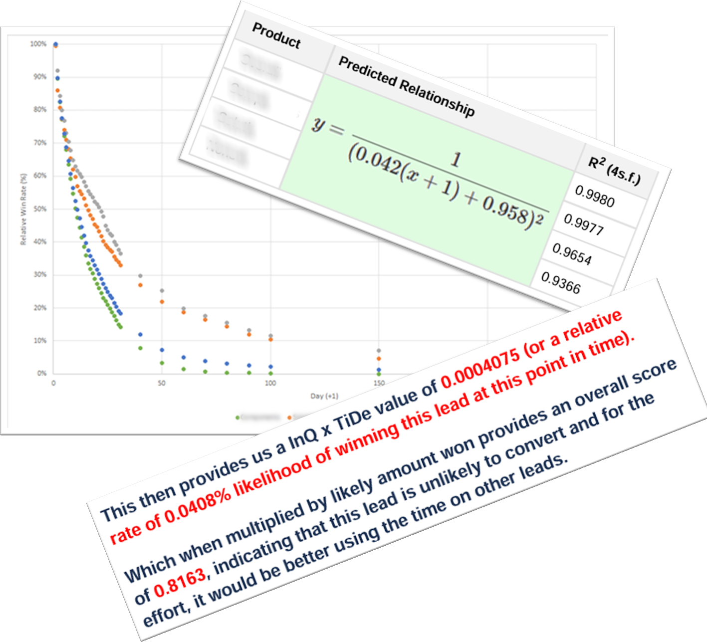

Projects
AutoSQL
SQL Automation using NodeJS
- Self Healing Database
- Automatic Index and Creation
- Control via SQL for maintenance by non-developers
Takes provided JSON format data and automatically creates/inserts SQL tables.
Identifies data type, possible indexes for streamlined processing.
Changes datatypes, lengths, and even adds new columns to handle new data for a self-healing database.
Upcoming feature: Additional module that automatically connects two tables for a combined view predicting index and important fields.
Simplify inserts through AutoSQL by predicting data types, indexes, and schema creation. Built to be additive and non-destructive to existing data.
Repository available on npm.
Predictive Sales
Sales Efficiency Model
For Pipeline Prediction and Sales Enablement
Answering the question: "How do we bet our resources on the winning leads?"
Using models of Expected Return vs Management of Risk.
Identification of 'hottest' opportunities for prioritization
3-metric based model taking into account all details of Sales CRM (automatically scraped):
- Lead Quality (comparison between opportunities) - K-nearest neighbour based model
- Timed Decay (simulated loss of interest over time) - Exponential model (inverse)
- Likely Value (likely value of sale) - K-nearest neighbour based model
Simulated improvements of ~15% sales and ~7% revenue over 1 year using insights with no extra resources or effort.
(Based on sample client CRM data - results different for everyone and their sales model)
Successfully implemented as an integration on Salesforce across two organizations, leveraging a robust SQL back-end. The API integration connects seamlessly into the round-robin system, ensuring efficient lead distribution and maximizing sales opportunities.
If you’d like to catch up for a coffee or discuss how I can help with your data needs, feel free to reach out via email.
Email: w@walterchoi.com